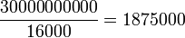
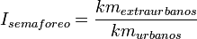

De: La Frikipedia, la enciclopedia extremadamente seria.
De: La Frikipedia, la enciclopedia extremadamente seria. De: La Frikipedia, la enciclopedia extremadamente seria.
Sólo hay una cosa peor que recorrer a día de hoy 500 km en un coche eléctrico: semaforear en uno de combustión.
| De la serie medios de transporte: | |||
| Coche eléctrico | |||
| |||
| Año de creación | Siempre han estado ahí, en estado de hibernación. | ||
|---|---|---|---|
| Velocidad | ¡La aceleración es su prestación! | ||
| Nacionalidad | Gabacha, hasta que a los chinos les dé por ahí. | ||
| Combustible | #¡VALOR! | ||
| Número de asientos | De 1 a 5. | ||
| Notas | ¿Me bajo y empujo? | ||
Hablar del compromiso con el medio ambiente, de las nulas emisiones, y de que las ballenas podrían procrear con libertad es sinónimo de vivir en el Mundo de la Piruleta, donde sólo ahí la tierra es del viento.
Ya se dijo con anterioridad que da igual el número de peces que puedan morir, y que el verdadero objetivo no es otro que la dominación mundial. Y gastando al año 30.000 millones de euros en petróleo, damas y caballeros, no vamos a ningún lado, salvo hacia atrás, hacia la dependencia de los que abren y cierran el grifo del crudo a su voluntad y de los que especulan con él. ¿Y qué pasa cuando te quedas sin vespeno? Que con cuatro soldaditos no se puede parar el ataque de treinta cruceros de batalla. Hay países que están comprando petróleo para no consumirlo, ¡para almacenarlo y ponerlo en uso cuando comience a escasear en otras reservas!
Y así a lo tonto acabamos de dar argumento para una película o videojuego futurista sobre la Tercera Guerra Mundial, en la que los países sin petróleo firman su capitulación ante los que sí que tienen para mover su tanques.
Pero a mí el viento (ahora sí, pardiez), el sol, el agua las tierras y el uranio: España puede producir su propia electricidad. Aparte de que… ¿y si esos 30.000 millones de euros los gastase el estado sin que éstos saliesen de la frontera? Más empleo e industria… igual a autarquía.
Ante la duda de si la electricidad es movimiento electrónico a velocidades próximas a la de la luz o si no son más que vibraciones electrónicas, La Frikipedia plantea su propia teoría acerca del principio de funcionamiento de un motor eléctrico. La otra alternativa sería la de la regla de la mano derecha, que si el índice a Parla, el corazón a Pinto, el gordo a Valdemoro; y para cuando quedamos darnos cuenta de cuál es la resultante tenemos un esgince de mano.
Así que, de acuerdo con la tesina del Honoris Causa Leandro Gao, el motor eléctrico se basa en realidad en la misma tecnología que la utilizada en los televisores: estampar electrones, pero en lugar de hacerlos chocar contra una pantalla con rayos catódicos, se hace directamente contra un aspa, produciéndose el movimiento de la misma debido al intercambio de cantidad de movimiento electrón-aspa. Un sólo electrón no hace nada, pero se tira de Avogadro y por algún lado se saca 6,023·1023 electrones. Además, si funcionan naves impulsadas por fotones solares por qué no iba a funcionar así nuestro motor eléctrico, puesto que los electrones también tienen su masa. El hecho es que el aspa se mueve, y para tener un coche pues no hace más falta que ponerle dos ruedas y a tirar para alante.
Al pisar el acelerador, el tubo que despide los electrones se acerca radialmente al centro del disco de las aspas, de manera que se pierde el par a la par que se aumenta la velocidad y la oxidación del motor (pues debe estampar todavía más electrones para compensar la disminución del radio).
Las baterías actuales de ión litio permiten autonomías de unos 250 km. Esto, junto a requerir un elevado tiempo para una carga completa, hacen que el coche eléctrico sólo pueda competir contra el de combustión en trayectos cortos.
Actualmente se están desarrollado nuevas tecnologías para solventar esta situación, que son las siguientes:

|
En esto que estaba el piloto tirado a 2 escasos km de la meta, asumiendo su derrota y que la inversión en un coche eléctrico no merece la pena; que cuando desconsolado al poner el casete su hija había dejado puesta la cinta de Justin Bieber cayole un rayo al coche y dobló al segundo. | 
|
Invitados estamos a hacer la ñapa, consistente en dividir el gasto anual de petróleo entre el precio de un coche eléctrico medianamente bueno:

Es decir, si en lugar de subir el IVA se direccionara esos treintamil millones en una subención del 100% en la adquisición de vehículos eléctricos, en cuánto, ¿cinco años? ¿Diez años? toda la población tendría un coche eléctrico, quitándose el Estado un gasto de 30000 millones a partir del sexto año. Favor de tener en cuenta que el elvado precio de estos vehículos se debe a que las ventas son pocas. Si el Estado los comprase a piñones...
Pero ahora bien: no se trata de hacer como hacen los franceses, decapitar a sus reyes para ponerse ellos en el poder: de nada sirve cambiar la gasolina por electricidad si a fin de cuentas se encarece desorbitadamente el precio de la segunda.
Gastos en electricidad << Lo que se gastaba en carburante.
No se puede someter a la industria a tal transitorio, puesto que hacer el cambio tan de repente la partiría por cualesquiera de sus sectores; o bien directamente y sin ir más lejos, no existen los recursos para llevar a cabo el proyecto eléctrico tan rápido. Entonces tiene que hacerse por niveles, clasificados en función del índice de semaforeo, definido en función de trayectos cotidianos.

Discutiendo tal índice, se construye la siguiente tabla de niveles.
|
|
Los coches eléctricos no incorporan ni embrague ni por ende pedal de embrague.
Los coches eléctricos tampoco incorporan caja de cambios.
Los coches eléctricos sí que incorporan freno de mano.
Autor(es):